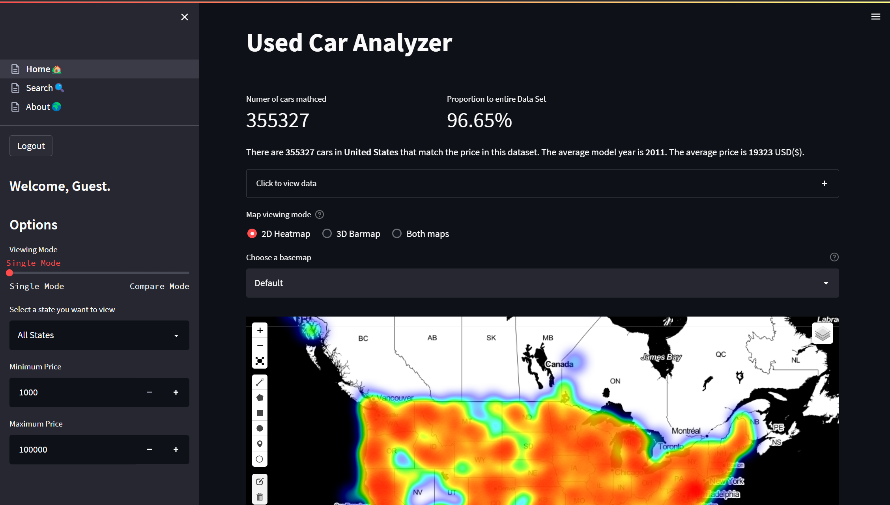
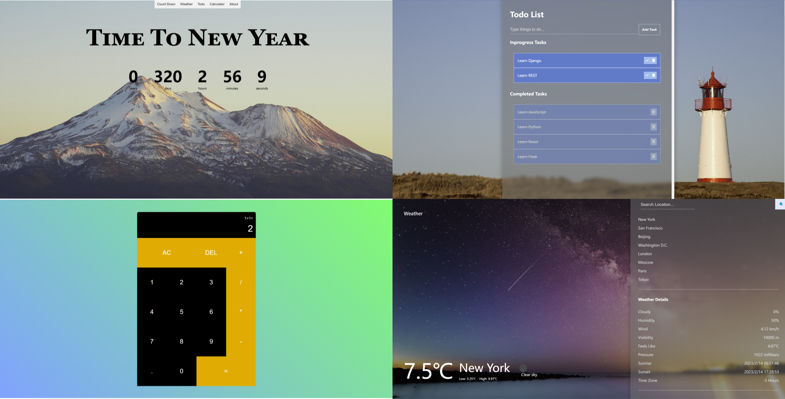
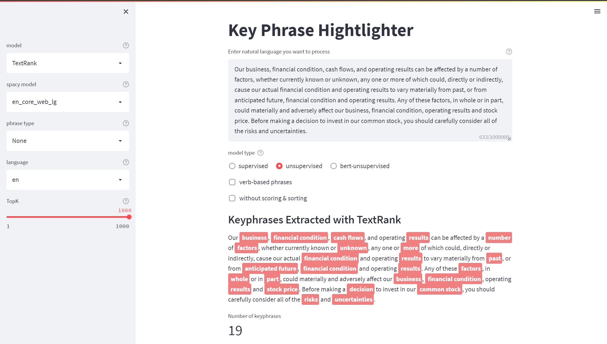
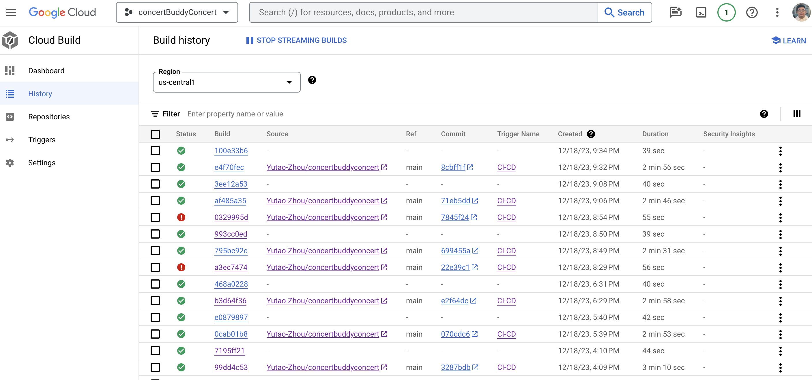
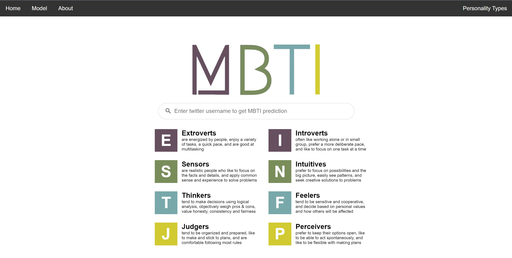
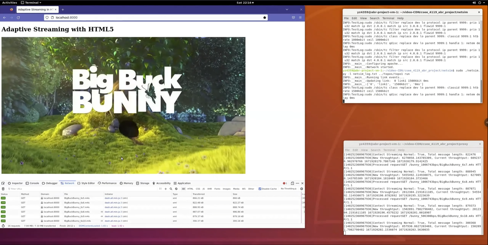
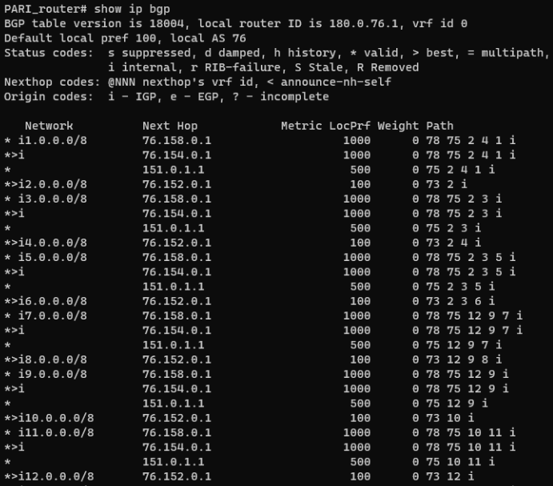
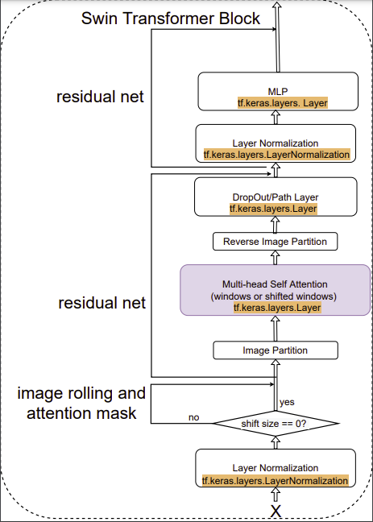

Featured project
ClawBot
US Market Morning Brief
Daily AI-powered premarket insights, in English and Chinese. Key news, sector trends, and the risks to watch.

AI-native engineer / Systems builder
SDE II at Amazon Web Services.
Building
reliable distributed systems with multi-region redundancy. AI is at
the core of my engineering workflow.
Featured project
US Market Morning Brief
Daily AI-powered premarket insights, in English and Chinese. Key news, sector trends, and the risks to watch.
Exploring how a city moves, one station at a time.
Making a large dataset easier to navigate.

Independent Project
Independent Projects

Collaborative Project

Independent Projects
Course Project: COMS 6156 Cloud Computing

Course Project: ELEN 6889 Large Scale Stream Data Analysis
Collaborative Course Project: EECS 6893 Big Data Analysis

Individual Course Project: CSEE 4119 Computer Network

Individual Course Project: CSEE 4119 Computer Network

Individual Course Project: ECBM 4040 Deep Learning and Neural Network

Course Project: ELEN 6883 Blockchain Technology
PHYS 129L Course Projects
Advisor: Prof. Ziming Zou (National Space Science Center, CAS)
Software Development Engineer II
Intern (2023) → SDE (2024) → SDE II (2025)
In 2026, my team rebuilt our workflow orchestration service from the architecture up, hardened it with a new decider, and added multi-region redundancy.
2023 — Present Internship + full-time
2026 team focus
Additional context
I'm Yutao, an AI-native software engineer based in Silicon Valley. At AWS, I build reliable distributed systems. AI is a core part of my day-to-day engineering workflow, and I also explore how it can become useful, everyday software.
My path runs from physics at UC Santa Barbara to electrical engineering at Columbia. I bring the same curiosity, persistence, and care to the systems I build and the people I work with.
Education
M.S. in Electrical Engineering
Sep 2022 — Dec 2023 · GPA 3.8 / 4.0
B.S. in Physics
Sep 2018 — Dec 2021 · GPA 3.7 / 4.0
Dean's Honors · Winter
2021
PyTorch · TensorFlow · Hugging Face · LangChain · OpenAI API · LLMs (GPT, Claude, Llama) · RAG (Retrieval-Augmented Generation) · Transformers · Computer Vision (OpenCV) · scikit-learn · Deep Learning · Reinforcement Learning · MLOps · Model Deployment · Prompt Engineering
Python · Java · Spring Boot · Django · Flask · FastAPI · AWS (S3, EC2, RDS, Lambda) · Google Cloud Platform (GCP) · Azure · Kubernetes · Docker · Microservices · REST APIs · GraphQL · Apache Airflow
React.js · JavaScript · TypeScript · HTML/CSS · Next.js · Full-Stack Development · D3.js · Streamlit
SQL (MySQL, PostgreSQL) · NoSQL (MongoDB, DynamoDB) · Graph DB (Neo4j) · Spark/Hadoop · Pandas · NumPy · Dask · Big Data Analysis · Stream Data Processing · Data Visualization
CI/CD · Git · Jenkins · pytest · unittest · JUnit · Integration Testing · Code Review · Design Review · Shell Scripting · Monitoring & Observability
Socket Programming · Threading & AsyncIO · XML/JSON · Blockchain & Solidity · MATLAB · LaTeX · CAD Design